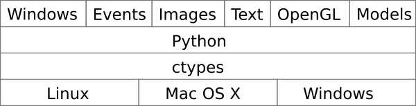

Welcome to pyglet
Pyglet is a cross-platform multimedia library for Python. It leverages the built-in operating system facilities on Linux, Mac OS X and Windows to provide windowing, drawing, event handling and so on. A broad overview of pyglet (hover for some further detail):

| NEWS: | |
|---|---|
| 2006-12-18: | pyglet.org goes live. |
| 2006-12-16: | GLU 1.2 compatibility fixes -- blur.py works on Windows. |
| 2006-12-9: | image regression testing implemented. |
| 2006-12-7: | pyglet demonstrated as part of OSDC. Window opening breaks when plugged into a projector. Fixed by the next day, demonstrated to applause from audience. Mesa compatibility also fixed during conference. |